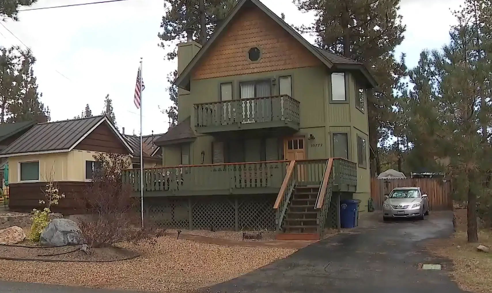

October 04, 2026
20-Year Cold Case Cracked: Husband Arrested in 2006 Killing of Wife Found Under Big Bear Home


Jill's photo via San Bernardino County Sheriff's Department; house photo via KTLA 5
Twenty years after Jill Maiorca vanished, the case has a suspect in handcuffs.
Jeff Anthony Maiorca, 53, was arrested the afternoon of Monday, Sept. 21 at the Big Bear Lake branch library on Garstin Drive and booked into the Big Bear Jail for murder (Penal Code 187(a)). He was charged in San Bernardino County Superior Court with murder plus a special allegation of using a deadly weapon, and he is being held without bail at the High Desert Jail in Adelanto. His next court date is Oct. 12.
The victim: Jill Maiorca, 29, was reported missing from Big Bear Lake in 2007. Investigators believe she was murdered in November 2006.
The crawlspace
The case broke open on Oct. 28, 2020, when a homeowner in the 39000 block of Forest Road in Big Bear Lake called the sheriff's station about a "suspicious discovery in the crawlspace" under the residence. Deputies and Big Bear Fire Department personnel recovered unidentified human remains from beneath the house. The sheriff's department says the body had been hidden there without the homeowner's knowledge — and the couple had never lived at the house.
An autopsy ruled the death a homicide, but for years investigators couldn't say whose body it was. In 2023, the department's Cold Case Homicide Team took over and ran additional DNA analysis — the remains were Jill Maiorca.
The arrest
"Through continued investigation, detectives identified Jill's former husband, Jeff Maiorca, as a suspect in her murder," the department said in a statement. He was taken into custody without incident. Public records show Jeff Maiorca had filed for divorce from Jill in Los Angeles County in 2004.
San Bernardino County Sheriff Shannon Dicus, praising the cold-case team, said: "I always say when we're talking about homicides that there are two people that know what happened; generally, it's the suspect who did it and the homicide investigator who's after them. And I couldn't be more proud."
The investigation remains ongoing. Anyone with information is asked to contact Detective Malcolm Page or Sergeant Justin Giles of the Homicide Detail at (909) 890-4916, or leave an anonymous tip with WeTip at (844) 909-3096.
Sources: New York Post · Victorville Daily Press
Source: New York Post / Victorville Daily Press — read the original report
← Back to latest stories